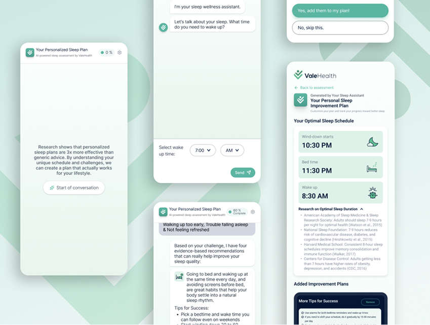
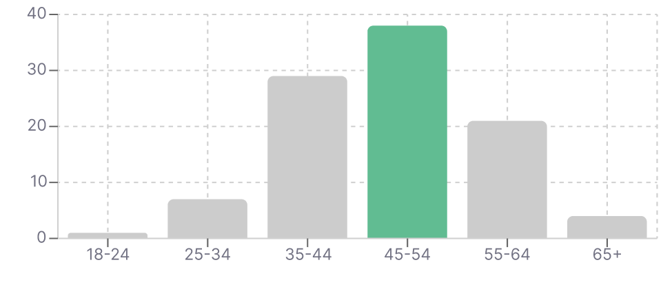
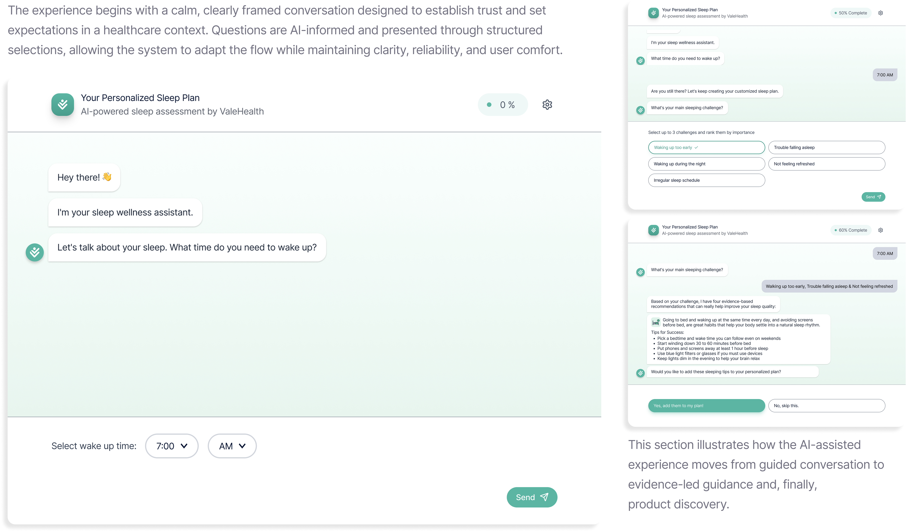

1

Valehealth AI Sleep Support Chatbot
UX Case Study — Health Marketplace AI Chatbot
Overview
[i]
Designing an AI-Assisted Sleep Support Chatbot for Valehealth
A conversational experience that guides users through sleep
concerns while offering clinically informed product
recommendations
Role
UX/UI Designer (AI Experience Design)
Deliverables
Research, Wireframes, High-Fidelity Prototype, Conversation
Flows
Timeline
6 weeks
Tools
Figma, Miro, UX Research
Partners
Engineering, Medical Partners (Froedtert and MCW health
network)

Better Sleep Understanding = More Trust = More Relevant Product Discovery =
Higher Conversion
Problem / Background
[ii]
Context
Sleep issues are common, yet finding the right solution online is
often confusing. Valehealth is a trusted health marketplace where
users expect confidentiality and medically credible guidance.
However, traditional product browsing feels overwhelming and
impersonal, especially for sensitive health concerns, leading to
hesitation
and drop-off.
and drop-off.
Core Problem
Trust & Medical Foundation
Opportunity
An AI-assisted chatbot can guide users through structured
questions to clarify sleep concerns, provide medically
informed tips from provider partners, and recommend relevant
products as supportive tools. By framing product discovery as
part of a health journey, Valehealth can help users
make confident decisions
while driving higher-quality conversions and
sustainable marketplace revenue.
Goals / Success Criteria
[iii]
Primary Goals
Enable users to explore sleep concerns through an AI-assisted
guided conversation that adapts to their responses while
maintaining clarity and trust.
Deliver personalized, explainable product recommendations by
combining AI-driven reasoning with insights from medical
partners.
Drive engagement and conversion by using AI to introduce
product recommendations in a timely, relevant, and
user-respectful manner.
Success Metrics

Conversation Engagement
To assess whether the AI-guided flow encourages participation.

Conversation Completion
To evaluate clarity and pacing of the AI-assisted experience.

Recommendation Interaction
To understand alignment between AI suggestions and user
intent.
Research & Discovery
[iv]
Existing Experience Audit
I went through the existing static survey flow to identify
friction points, drop-off risks, and limitations in adapting
questions based on user responses.
Purpose
This helped establish why a linear, form-based experience
was insufficient for collecting nuanced sleep-related
information.
2
User Population & Research Context
Demographic analysis revealed that the core user base skews
older, with the majority falling between
35–64 years old.

3
Competitive & Market Research
Health and wellness platforms using conversational experiences
were reviewed to understand how different interaction models
support sensitive topics such as sleep.
This included chatbots, quiz-based flows, and guided experiences.
This included chatbots, quiz-based flows, and guided experiences.
What I evaluated:
Gamified flows
Segmented multi-step forms
Conversational chat experiences
Focus on:
User effort
Clarity of questions
Perceived trust and credibility
4
Chat Flow Pattern Exploration
Different conversational structures were explored to identify an
approach that balances information gathering, user comfort, and
AI-assisted reasoning.
Patterns compared:
Gamified interactions
Quiz-style decision trees
Guided conversational chat
Key consideration
Which pattern allows AI to adapt questions while keeping user
input structured and safe.
5
User Behavior & Mental Model Analysis
User behavior patterns and feedback from existing
sleep-related tools were analyzed to understand how users
prefer to discuss personal health concerns and how much effort
they are willing to invest.
Insights I looked for:
Trust in medical or expert framing
Comfort with selecting vs typing
Preference for short, progressive questions
6
AI Opportunity & Constraints Analysis
Potential AI touchpoints were evaluated to determine where AI
could meaningfully improve the experience beyond the static
survey without introducing unnecessary complexity or risk.
What I evaluated:
Adaptive question sequencing
Recommendation logic
Explanation generation using medical sources
These considerations represent design-led hypotheses used to
shape the experience; final AI logic and behavior were defined
by the engineering team.
Decision Making & Design Principles
[v]
Conversational, not robotic
The chatbot was
designed to feel supportive and human
without mimicking open-ended AI chat. Language, pacing, and
response structure were intentionally constrained to
maintain clarity and credibility in a healthcare context,
while still feeling approachable and calm.
Short, progressive steps
Instead of replicating a long survey, questions were broken into
small, sequential steps. This reduced cognitive load, made
sensitive topics easier to approach, and allowed the system to
adapt the flow based on prior responses.
Explain recommendations, not just present them
Product suggestions were always paired with clear reasoning
and medical context. Explaining why a recommendation appears
reinforces trust
,
supports informed decision-making
, and avoids the perception of sales-driven automation.
Why This Approach
Many health chatbots fail by prioritizing either open-ended
conversation or rigid flows. This approach balances structure
and AI-assisted adaptability by grounding recommendations in
sleep science and expert insights,
increasing user confidence, long-term engagement
, and the likelihood of
conversion
without compromising trust or credibility.
Interaction Design & Prototypes
[vi]
From AI-Guided Conversation to Informed Product Discovery
This section demonstrates how the experience is intentionally
structured into two primary stages: guided conversation and
personalized planning, supported by AI-assisted reasoning,
evidence-led guidance, and user-controlled interactions.
Stage 1: AI-Guided Conversation & Trust Building

Stage 2: Transition to Product Discovery

[vii]
Key Learnings
Conversational UX needs tight scaffolding to avoid confusion
Users respond better to explanations behind suggestions
Future Improvements
Add sleep score tracking
Integrate personalized tips over time